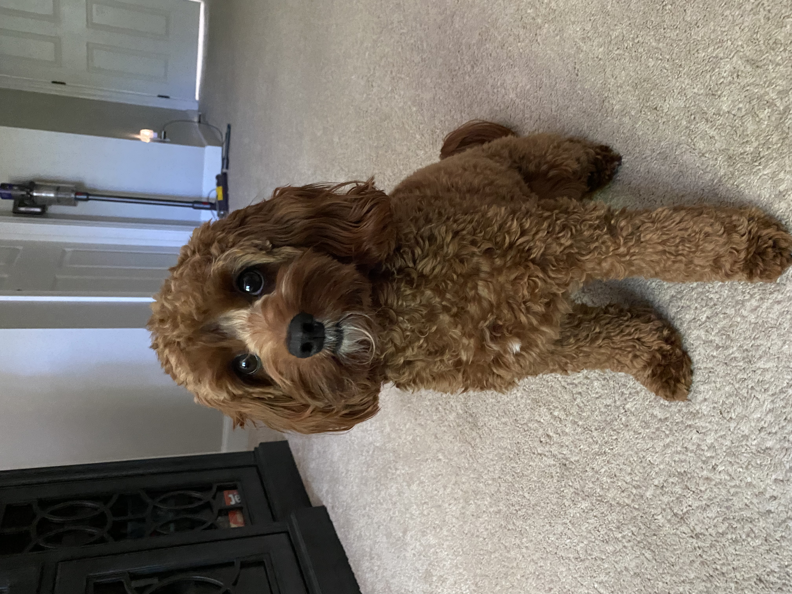

About Me
My name is Meredith Leonard, and this is my last semester in my M.Ed graduate degree in Learning Design and Technology. I started my graduate degree in Summer 1 of 2021. I started immediately after graduating with my undergraduate in Elementary Education with Concentrations in Behavioral Studies and Language Arts. I am enjoying all that I am learning in my program. I look forward to applying it in my graduate program to my classroom and future endeavors. Below are some facts about me.
- I am a first year teacher, and I teach 3rd grade.
- I teach at the school that I graduated from.
- I am graduating in May of 2022.
- I have a Cavapoo puppy who is one year old. You can see a picture of her below.
- I love to go shopping online and in store after school and on the weekends.